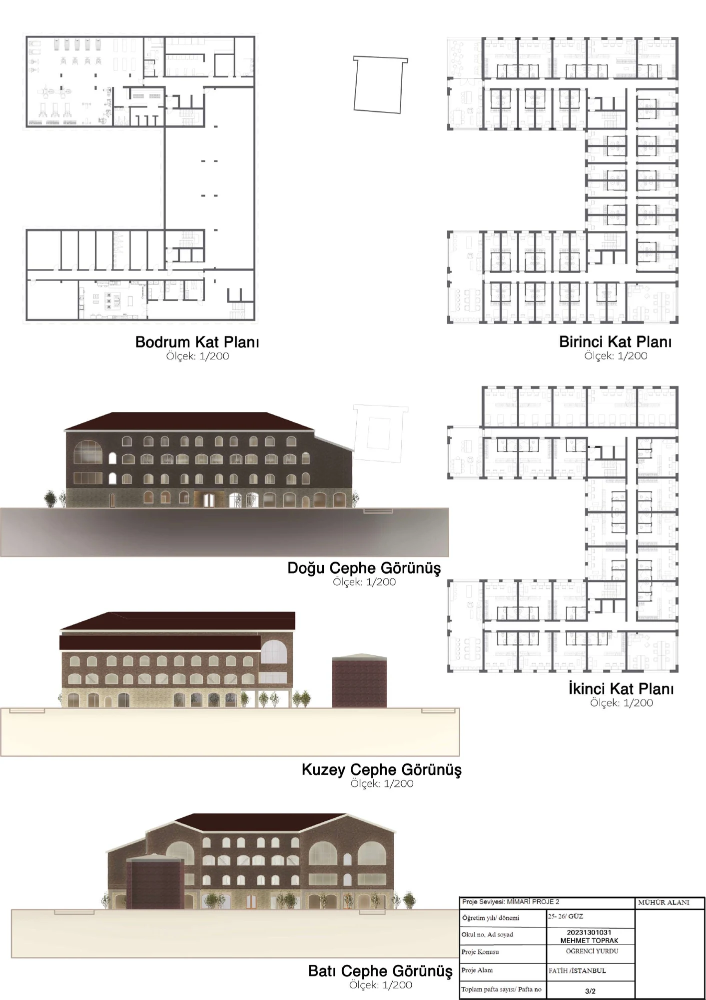
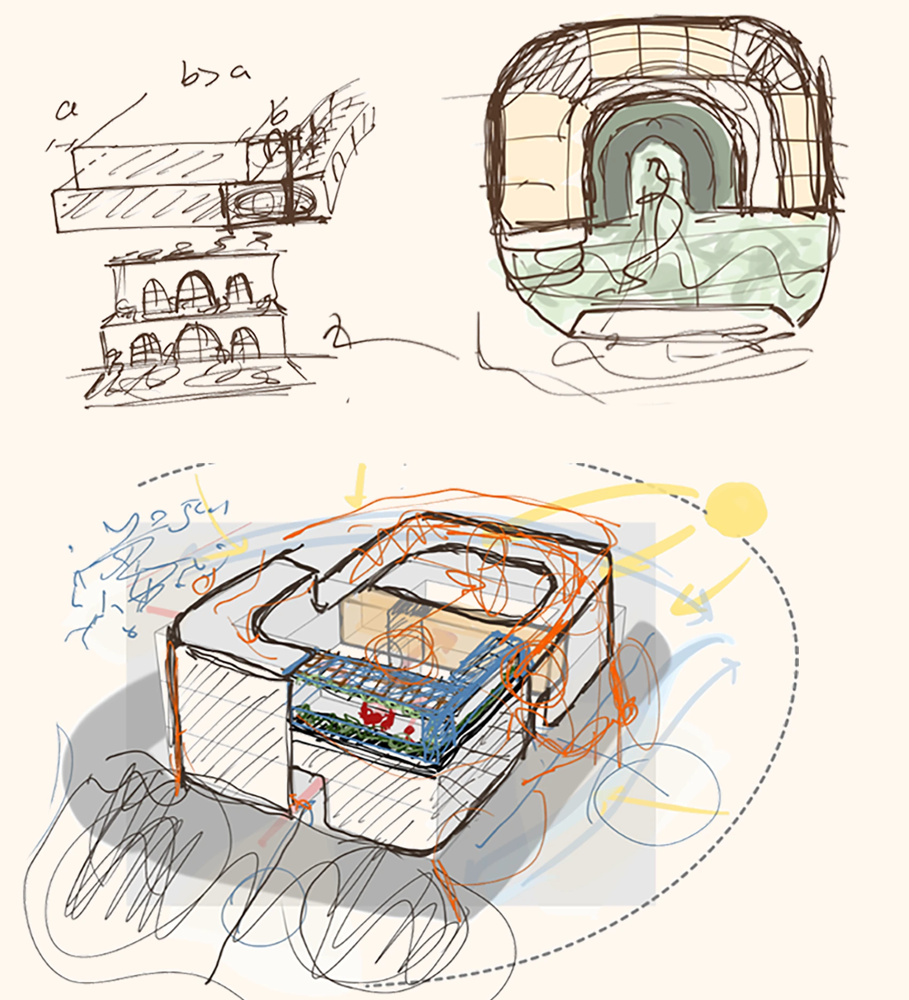
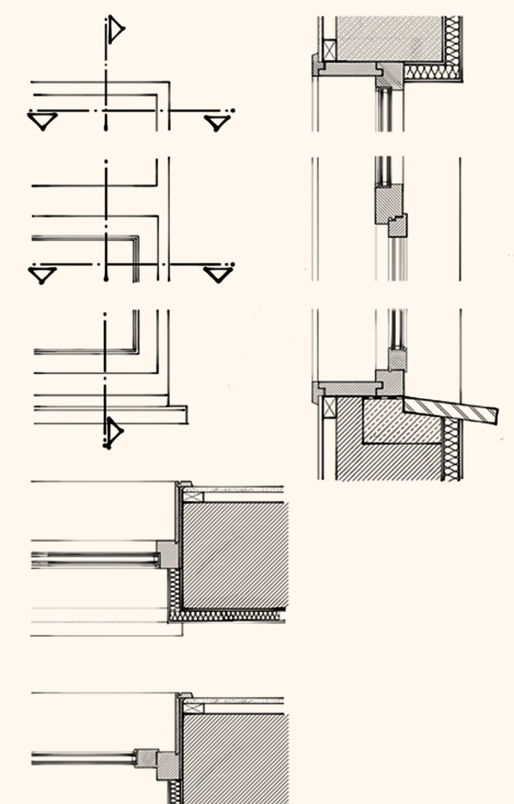
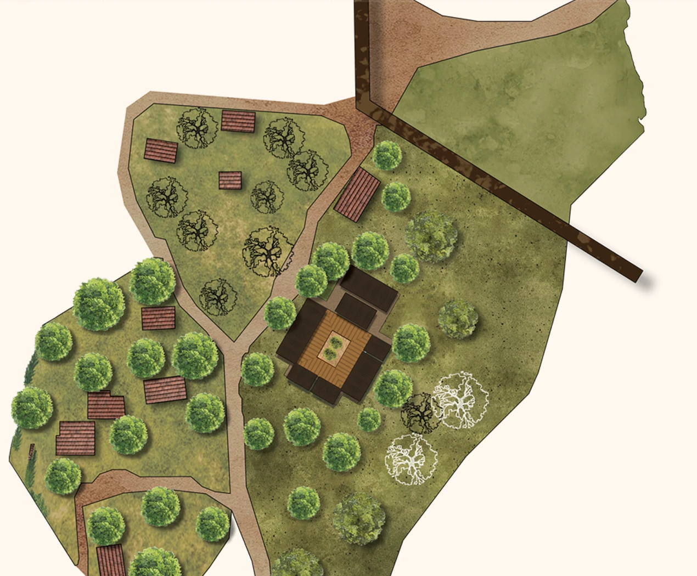
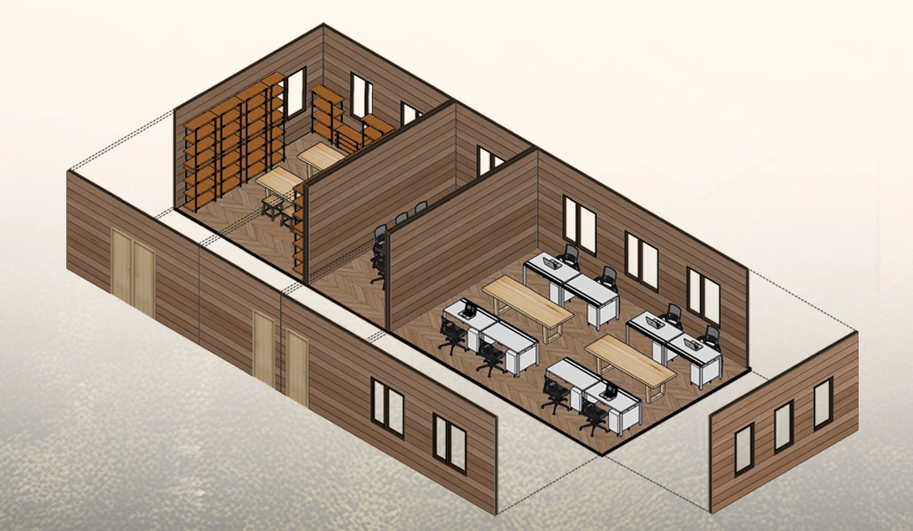
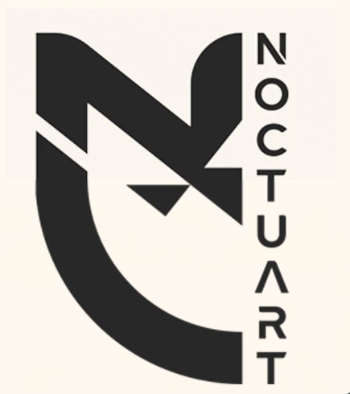
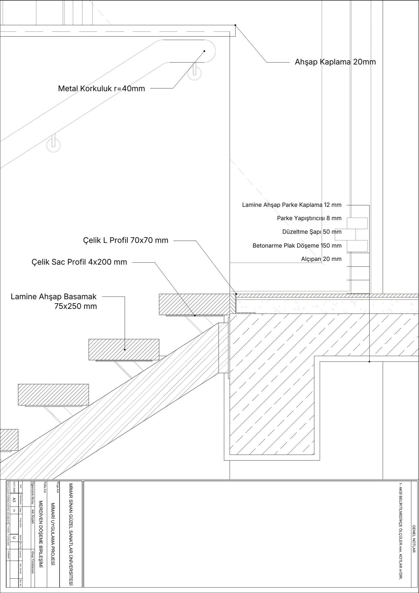

MEHMETTOPRAK.
ARCHITECTURE
PORTFOLIO＋

ÇİZİMİN ÜZERİNDE GEZİN / RENKLERİ AÇ
01 / YAKLAŞIM
Yer, yapı
ve gündelik hayat.
Kentsel yerleşimden yapı detayına uzanan mimari çalışmalar. Fikirleri, çizimleri ve üretim sürecini bir araya getiren bir seçki.
02 / PROJE ARŞİVİ
Seçilmiş çalışmalar11
 PAFTA / 01
PAFTA / 01Perşembe Pazarı
Meydan & Balıkçılar Çarşısı


PLAN / 02Fatih Öğrenci Yurdu
Ortak yaşam / barınma
 PLAN / 03
PLAN / 03
Kuzguncuk Kitap Kafe
Yapı / uygulama / detay


ESKİZ / 04Baumit Yarışması
Yer ve biçim analizleri · konsept eskizleri


DETAY / 05Pencere Detayları
Doğrama, denizlik ve duvar birleşimleri
 KESİT / 06
KESİT / 06
Bina Yapım 1
Temel, döşeme ve plan çizimleri
 PLAN / 07
PLAN / 07
Mimarlık Ofisi
Planlar, maket ve görselleştirme

VAZİYET / 08
MDC25 Yarışması
Yerleşim, vaziyet ve kesit


AKSONOMETRİ / 093B Yerleşim Tasarımı
Yaşam birimleri ve ortak alanlar
 FOTOĞRAF / 10
FOTOĞRAF / 10
Mimari Fotoğraflar
Mekân ve yapı gözlemleri


KİMLİK / 11NOCTUART Görsel Kimlik
Logo ve dijital illüstrasyonlar
03 / SÜREÇ
Bir projenin
arkasındaki çizgiler.
Eskizler, yerleşim denemeleri, uygulama çizimleri. Proje sayfalarında son ürünle birlikte çalışma sürecini de inceleyebilirsin.
ÇİZİMLERİ KEŞFET